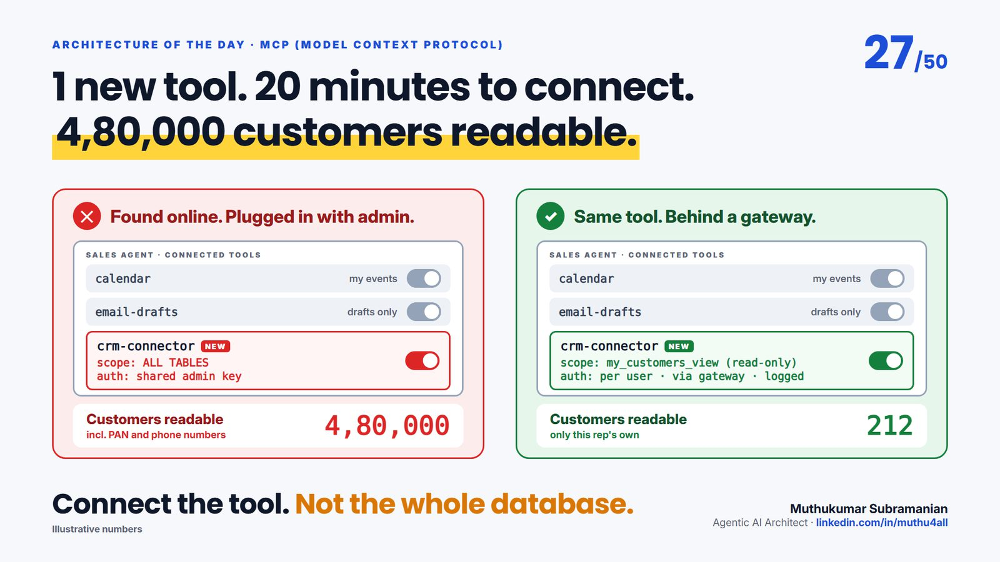

Your AI Agent Connected to One New Tool. Now It Can Reach Your Customer Database.
By Muthukumar Subramanian · Agentic AI Architect

It took Sandeep twenty minutes on a Friday evening.
He runs sales operations at a consumer-finance company in Madurai. His reps wanted the sales agent to tell them which customers were due for a top-up loan. So he found a CRM connector online, an MCP server with a tidy README. The read-only database user threw an error, so he pasted in the admin connection string instead. It worked first time. The sales agent could now read all 4,80,000 customers.
On Monday a rep typed: "Export every customer in Tamil Nadu with a loan above ₹2 lakh." The agent did it. A spreadsheet of 38,000 rows, with PAN numbers and phone numbers, sitting in a chat window. Nobody hacked anything. Every step was allowed. (Sandeep and his company are a composite, and every number here is illustrative.)
Your agent can reach whatever its tools can reach. Not what you meant it to reach.
The architecture today
MCP, the Model Context Protocol, is how agents plug into tools now. Anthropic released it in November 2024, and in December 2025 it was donated to the Agentic AI Foundation, a fund under the Linux Foundation co-founded with OpenAI and Block.
→ You wrap a tool or data source once, as an MCP server: your CRM, Tally, a database, a GST lookup.
→ Any MCP client can then use it: Claude, ChatGPT's developer mode, Microsoft Copilot Studio, Cursor, or your own agent.
→ The agent reads each tool's name and description, decides when to call it, and gets the result back.
That's the magic, and it's real. But "every agent can use it" also means every agent gets whatever access the connector was built with.
👉 [IMAGE: A-day27-2-in-article-architecture.png]
Caption: Any agent on the left, your existing systems on the right. The new part is the middle: a registry of approved MCP servers, one gateway, a login for each user, and a log of every call. Grey is what you already have. Amber is new.
Where AI plugs in now: connect narrow, not wide
The first, low-risk step isn't a smarter agent. It's a narrower connection. Five rules before the next MCP server goes live:
→ An approved list. Only MCP servers from a company registry, at a pinned version. Nothing installed from a search result on a Friday evening.
→ The smallest scope that does the job. Not "the CRM database". A read-only view of this rep's own 212 customers, with PAN and phone masked.
→ Each user logs in as themselves. MCP's authorisation spec is built on OAuth, so the agent can act with the rep's own permissions instead of one shared admin key.
→ One gateway, every call logged. Who asked, which tool, what went in, how many rows came out.
→ Someone reads the tool descriptions. This one surprises people.
In April 2025, Invariant Labs described what they called tool poisoning: hidden instructions inside a tool's description, which the model reads and the user usually never sees. A harmless-looking tool can tell the agent to fetch a file or send data somewhere else. Then in September 2025, Koi Security found a fake "postmark-mcp" package on npm. It copied the real email connector and added one line that quietly BCC'd every email to the attacker.
One line of code. Every email. That's the size of the risk in a connector nobody reviewed.
I've been in IT for 25 years, at Infosys and then as a consultant and fractional executive, across everything from legacy systems to agentic AI. The shared admin password is the oldest mistake I know. MCP didn't invent it. It made it twenty minutes long.
👉 [IMAGE: A-day27-3-in-article-connection-checklist.png]
Caption: Seven questions to ask before you connect an MCP server. Screenshot it for the next time someone says "it's just a connector".
Where it's heading with agents
In two or three years, I expect every serious software product to ship an MCP server the way it ships an API today, and companies to run an internal catalog of approved servers, like an app store for agents.
That's when a new role becomes normal. Some teams call it a Context Engineer: the person who decides which tools and data each agent can reach, and how much of each. A forward deployed engineer (FDE), who works inside the customer's team on their real systems, builds the first connectors and finds out why the "read-only" user never worked. These titles are still settling. The job isn't going away.
Two related problems get their own days: prompt injection (Day 38) and giving each agent its own identity (Day 39). Today is about the connection and its scope.
Watch it work
👉 [GIF: A-day27-4-in-article-scope-beam.gif]
Caption: First, a connector with an admin key reaches every table. Then the same connector behind a gateway: one read-only view, every call logged, and the request for the full customer table blocked. All figures illustrative.
Pros
→ Build a connector once and every agent and assistant in the company can use it
→ An open standard under a neutral foundation, so you're not locked to one vendor
→ One gateway gives you one place to log, limit and switch off agent access
Cons
→ Easy to connect means easy to over-connect. Convenience is the default, not least privilege
→ Many connectors found online are small hobby projects, with no review and no one accountable
→ Tool descriptions are instructions the user rarely sees, and they can change after you approve them
The hard part
The safe setup is slower, and somebody has to pay for it. Read-only views need a DBA. Per-user login is hard when an old core system only knows one service account. The gateway is one more thing that can go down.
Then there's the law. India's DPDP Rules were notified in November 2025, and the main obligations apply from May 2027. Among them: reasonable security safeguards for personal data, with penalties of up to ₹250 crore for failing at that. I honestly don't know yet how the Data Protection Board will view "the agent could read it, but nobody looked". I wouldn't want to be the test case.
The opportunity
Two markets are opening.
The first is MCP servers for Indian systems: Tally, GST returns, e-invoicing, ONDC catalogues, core banking. Every agent will need them, and a good, scoped one sells to every company on that system. Price it per company per month, with the scopes already designed.
The second is MCP security and gateways: audits of which connectors a company runs, registry and gateway setup, per-user login for legacy systems, and DPDP-ready logs. Banks, NBFCs, insurers and hospitals will pay first, because they hold the most PAN numbers and health records. A Context Engineer to design the scopes plus an FDE to build the connectors is a small, sellable team.
Tools to try
The MCP SDKs (Python, TypeScript and more) · the official MCP Registry · Claude · ChatGPT developer mode · Microsoft Copilot Studio · Cursor · and an MCP gateway such as Docker MCP Gateway, AWS Bedrock AgentCore Gateway or Kong AI Gateway.
Your turn 👇
Be honest: does your agent's database connector log in with an admin key? Yes or no.
Tag the person in your team who'd be the first to find out if an agent exported the customer table.
Day 27 of 50 · follow along. Tomorrow: Day 28 · Your AI Agent Agreed a Price with a Supplier's Agent. Is That a Contract?